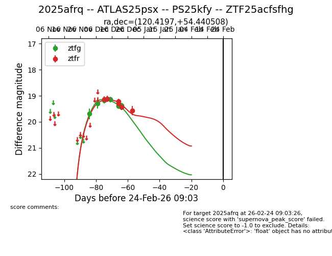
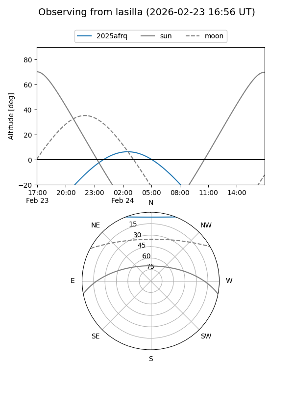
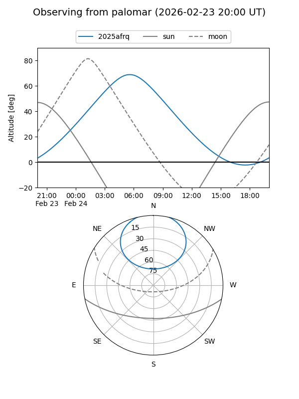
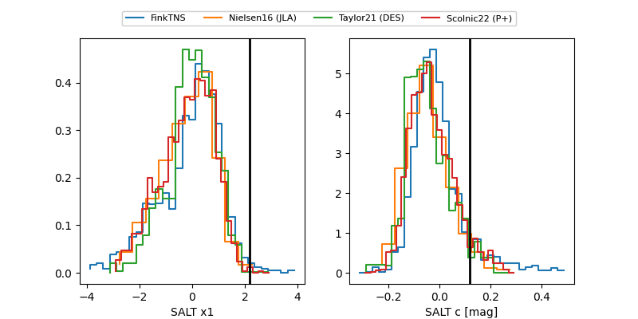

2025afrq
Target 2025afrq at 2025-12-30 05:56
Aliases and brokers:
FINK: fink-portal.org/ZTF25acfsfhg
Lasair: lasair-ztf.lsst.ac.uk/objects/ZTF25acfsfhg
ALeRCE: alerce.online/object/ZTF25acfsfhg
TNS: wis-tns.org/object/2025afrq
YSE: ziggy.ucolick.org/yse/transient_detail/2025afrq
alt names
ZTF25acfsfhg (ztf,fink_ztf)
2025afrq (tns,yse)
ATLAS25psx (atlas)
PS25kfy (panstarrs)
Coordinates:
equatorial (ra, dec) = 120.4197,+54.44051
equatorial (HMS+DMS) = 08:01:40.72,+54:26:25.83
galactic (l, b) = (163.6581,+31.80995)
Flags:
Photometry:
last ztfg=19.43, ztfr=19.43
9 ztfg, 5 ztfr detections
Lightcurve

Visibility


Additional plots
